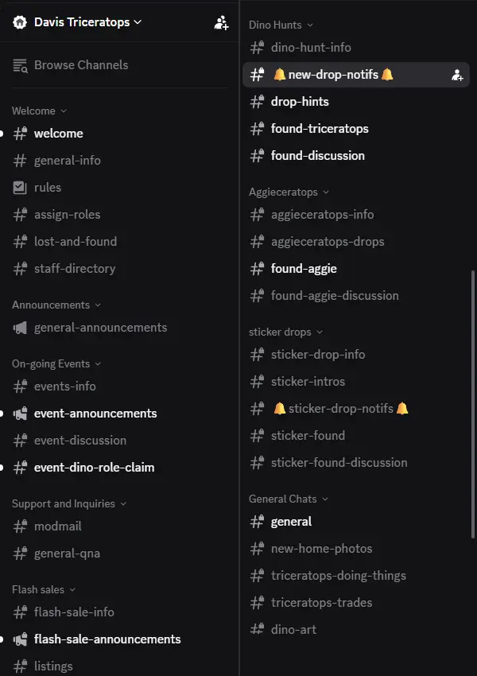
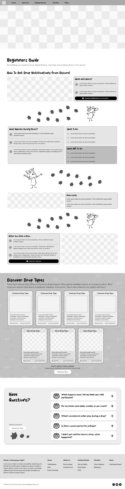
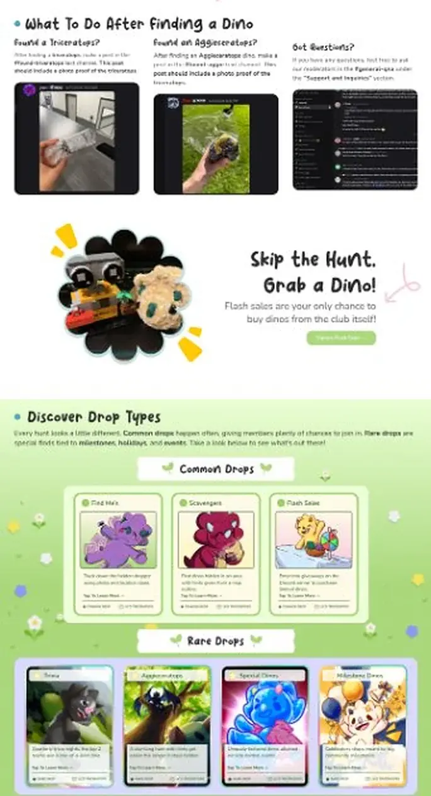
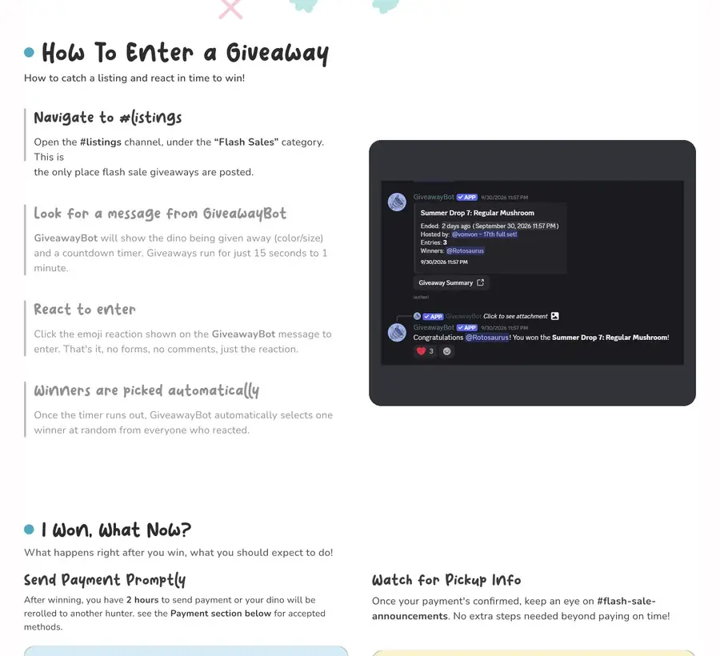

- Client
- UC Davis Triceratops, a campus club built around crochet dinosaur scavenger hunts, hired our team to build their first website.
- Problem
- Everything new members needed lived across a 41-channel Discord, so interested students got lost before they ever joined.
- My impact
- Designed and built Getting Started and Flash Sales, cutting a dense rulebook into 8 scannable sections.
- Shipped with Claude Code and the Figma MCP, cutting what I estimate as weeks of build work to hours.
Many interested students want to join a hunt, but can't find the rules or where to start
Joining the club means learning how hunts, drops and claiming work, all inside a Discord with 41 channels. This can be difficult if it's your first time and no one walks you through it. Many students give up before their first hunt because they can't find the rules, the hunt details or the next step.

How might we give new members a clear, step-by-step path to their first hunt before they even open Discord?
Interest wasn't the barrier; the rules were
With no usage data, I relied on the research gathered: a 62-response survey, 12 interviews and a SWOT of 9+ club sites. AI summarized key findings from the interview recordings, so interviews could stay conversational instead of turning into note-taking. I focused on new and interested students, since active hunters already live in Discord.
Why it matters: the interest was already there but got lost in unclear rules for taking part, so our goal was to bring clarity and remove friction from the path to a first hunt.
So I cut what overwhelmed and kept what guided
What didn’t work
1Everything the client gave us

- Every rule in one place
- Dense blocks of rules to read through
- Mentors · Early hi-fiCalled the page congested
- Usability test · Hi-fi V12 of 6 testers had scroll fatigue
2Every step’s GIF playing at once
- Shows each step in motion
- Four moving GIFs compete for attention
- Usability test · Hi-fi V12 of 6 testers missed these steps while every GIF played
What I chose
1Cut the rulebook into 8 scannable sections
- Short numbered steps newcomers can skim
- Clear sections, so each rule is easy to find
2Swapped simultaneous GIFs for 4 still steps
- One thing to look at at a time
- Click a step to see exactly where to go
The result: one clear path from first visit to first hunt
An industry mentor called Getting Started the strongest visual direction of the project.
Getting Started

1 2 3- Added: A step-by-step after-claim guide, since 3 of 6 testers couldn't find what to do after claiming a dino.
- Fixed: Rebuilt button and text colors after a mentor flagged a WCAG contrast failure.
- Moved: Drop types into pop-ups, since there was too much content for one card.
Flash Sales

1 2- Reused: Getting Started's 4-step pattern for entering a giveaway, so members learn one pattern across the site.
- Replaced: The filler “I won, what now?” box became real next steps: pay within 2 hours, then watch for pickup info.
After manual QA, I fixed broken breakpoints and added missing hover and empty states.
Clarity comes from cutting, and from checking early
- Cutting beats explaining. The clearest page is usually the shortest one, so I now start from what a new member needs first and keep only what helps them act on it.
- Check early, not at the end. Fixes cost the least in the first draft, so I now check contrast, motion and breakpoints as I design and build, and review AI-generated code with the same care as my own.
Thank you to my wonderful team!
A huge thank you to my lovely teammates Anqi Su, Leif Caratiquit, Nathan Salas, and Lisa Wang, and to our amazing lead, Jared Martinez! I'm also so grateful to our industry mentors and to UC Davis Triceratops for trusting us with their first website.